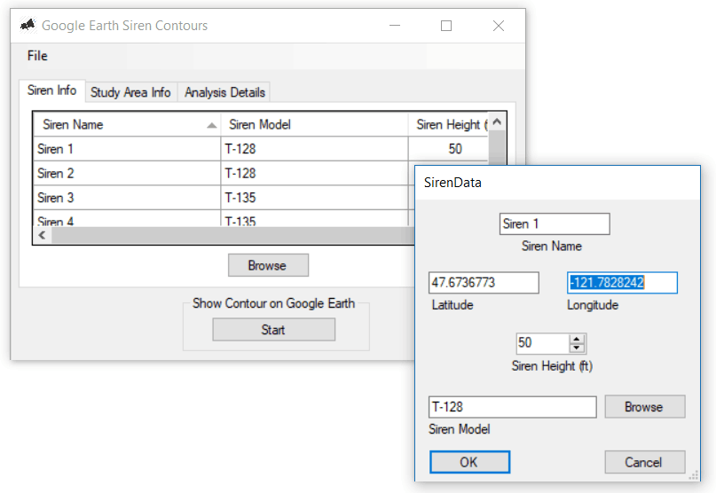

Drag and Drop Website Builder
Computers running acoustic models are the best way to determine the coverage of your sirens. There is a wide number of acoustic models that range from simple spreadsheets to complex computational models. However, all models share some basic principles. There are also several different software packages that can be used to compute your coverage contours.
Different acoustic models handle the basic acoustic principles differently, with some providing more detail than others. The following is a list of some of the current models in increasing levels of complexity. Click on each model to learn more about it.
Acoustic Analytics has developed our own custom build software that uses a simple map interface and ISO 9613 as the propagation algorithm, and was specifically designed to rapidly develop and display siren contours. There are also several commercial software packages for computing the noise from a wide range of sources. Most, unfortunately, have steep learning curves and tend to be expensive.
Drag and Drop Website Builder